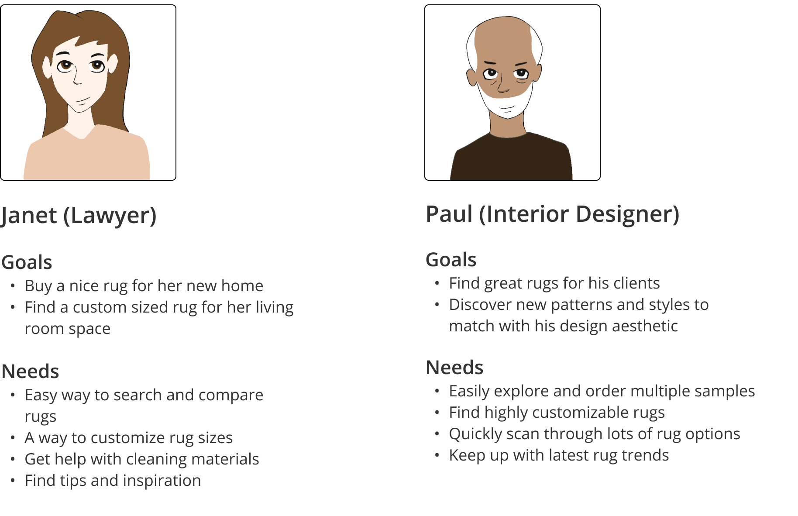

- Date: May 2021 - Dec 2021
- Role: UI/UX Designer
- Work Setting: Freelance
I worked with The Perfect Rug to redesign their e-commerce site. I focused on making it mobile responsive, as well as on reducing clutter and making the site easier to use. As part of my work, I ended up redesigning all the key experiences, such as search, customization, and checkout. I also refreshed their branding and made the product more appealing.
At first glance, I noticed that the existing site offered a wide variety of rugs, with a lot of customization options. However, the interaction flows were not streamlined and the overall experience was not optimized. In addition, the mobile version of the site was also hard to use and needed a redesign.
{kind=link}
After reviewing the different functions of the site and talking to the team, I was able to deduce two primary personas that were targeted. The Perfect Rug focused on people that were buying rugs for their home. They were interested in highly customizable rugs that would fit their needs. The site also targeted interior designers that were trying to discover and pick rugs for their clients. Both personas had to be considered as I was gearing up for the redesign.

In order to get a deeper understanding of the product and to identify problem areas, I conducted a UX audit. My analysis showed that the site's design was dated, and the interaction model was complicated and at times confusing. I also noticed that the flow from searching for rug, to customizing it and then checking out is complex and has a lot of steps. On the bright side, I noticed that the site has a lot of interesting options for purchasing and customizing rugs.

Next, I conducted a competitive analysis to get an idea of what else is out there, and what might be some areas where competitors are better positioned than The Perfect Rug. I analyzed online rug stores, as well as other popular e-commerce sites. I observed that other sites had simpler navigations and more useful search functions. I also noticed that the average product detail page was simple than the one we had. The competitive analysis was useful in pointing me towards areas that can be improved, as well as understanding where the competition was.

To see how the site was being used, I analyzed its Google Analytics data. I learned that there are a number of pages and functions that were seldomly used and didn't seem to add a lot of value to customers. I was also able to identify key interaction flow and learn how customers navigated the site as they were using the site to find and purchase rugs. I took note of the learnings and would later use them to help inform me when deciding which pages to remove or change.
After I presented all my research findings to the team and got their feedback, I identified the problems that I wanted to tackle. I proceeded with brainstorming potential solutions, which I turned into wireframes. Then, I validated those with the team and got feedback. After a few rounds of iteration, I was able to align with the team on direction going forward.
{kind=link}


As I moved to higher-fidelity prototyping, I came up with a visual language for the redesign. I started with the existing branding, but also refined and adjusted it for better aesthetics and visual appeal. Since the site was focusing on shoppers of high-end custom rugs, I focused on making the brand more sophisticated and stylish. I also focused on adding a softer and more human feel to the brand.
Finally, I created high-fidelity designs that included much streamlined interactions, ease of use, and full mobile responsiveness. To do that, I had to greatly simplify the main navigation, search, product pages, as well as checkout process. The client was very pleased with the final result and I worked with the engineering team to get it implemented in the product.
{kind=link}
{kind=link}
{kind=link}